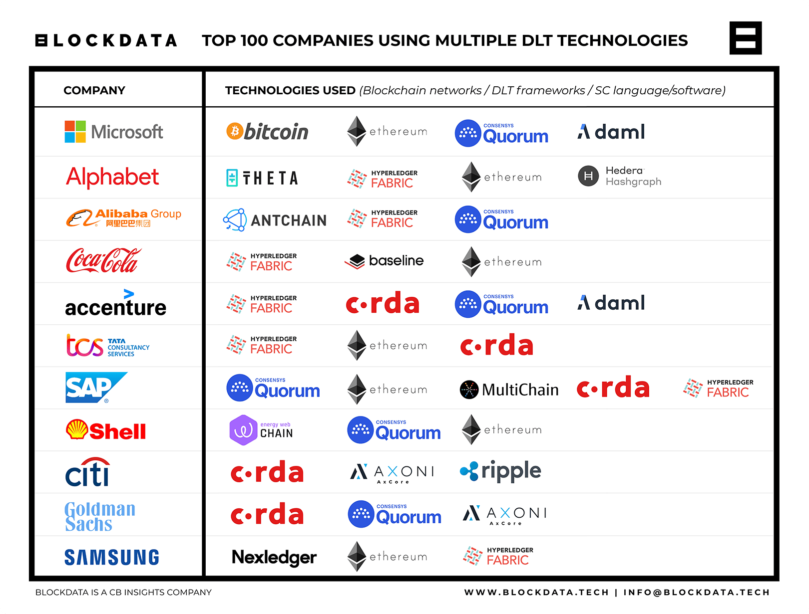
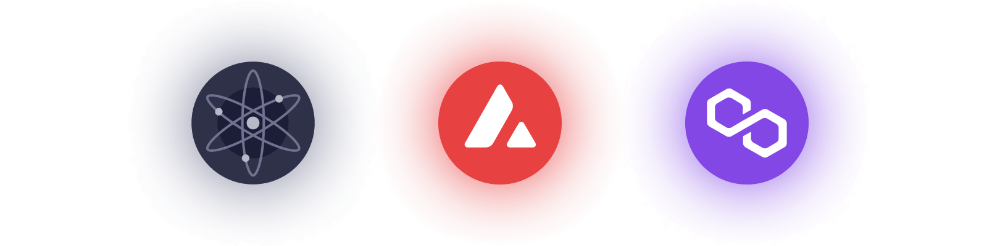
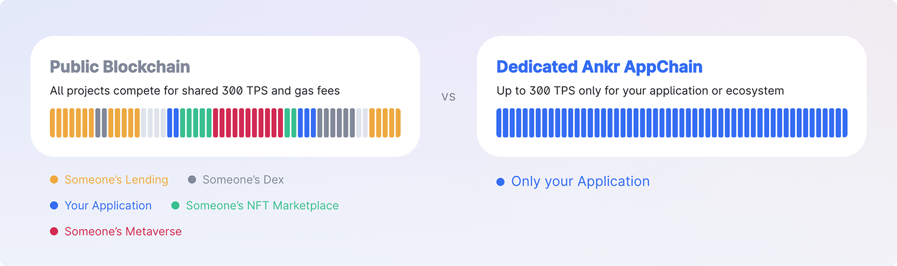
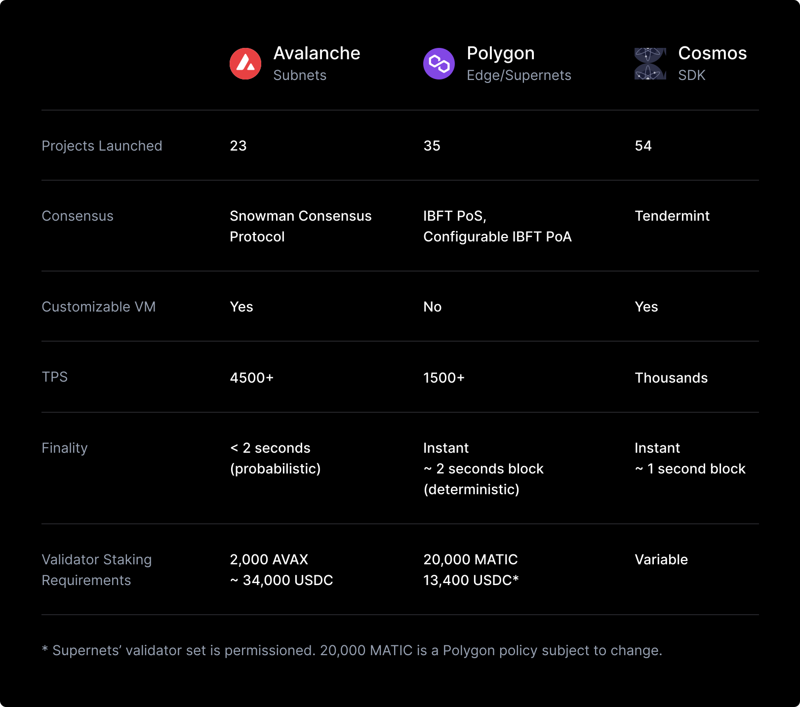

Understanding private blockchains
The challenge of public blockchains
Not all business applications are appropriate for public blockchains. We've heard time and time again that while public retail chains give us amazing connectivity to the world, for regulated entities they come with challenges in compliance, privacy, and usability.
These challenges differ based on jurisdiction and the type of entity, and it varies from use case to use case. What if there was a way to benefit from instant settlement, workflow efficiencies, and transaction auditability on a chain entirely catered to your use case?
Private blockchains
Over the last several years it's become easier for businesses and consortiums to use bespoke blockchains to solve these challenges. Traditional Enterprise Blockchain allows you to build on controlled private chains such as Quorum, which is an open-source, permissioned version of the Ethereum blockchain, or Hyperledger Fabric, an open-source private distributed ledger. These solutions have been popular among very large enterprises.

While in Enterprise Blockchain things are easy to customize and control, they do have some limitations. They are fragmented, have limited interoperability with other chains, and don't tend to have as widespread community support as public chains to drive innovation.
Recently, application-specific chain frameworks have emerged as a best-of-both-worlds, enabling customizability while retaining connectivity with the wider blockchain ecosystem. Cosmos chains, Avalanche subnets, and Polygon supernets are some of the leading solutions allowing enterprises to preserve validator control, privacy, KYC/AML compliance, and gas fee customizability while base infrastructure is handled for them.

Whether utilizing some of the more traditional enterprise blockchains or rolling your own application-specific chain, there's a wide variety of tools now available that make it possible to deploy stablecoins or assets on-chain.
Scalable, predictable fees
Predicting and managing gas fees is a pain, with public chain fees dependent on activities in the network that have nothing to do with your application. You don't want to be interrupted with higher fees or slower settlement times because of a popular game or celebrity NFT drop. When Taylor Swift crashes Ticketmaster, it's not like anyone worries about their coffee purchases going through.
Instead, private app chains are created for independent, predictable performance. You can set gas fees in whatever token and fee structure makes sense for your use case. At Brale we often hear the desire to have fees paid in a fixed amount of stablecoins, but it's also possible to remove fees entirely for end users, which is more typical of the way most applications work today. The result is control over the congestion of the network and a smooth user experience.

Identity as the cost of entry
The openness of public chains is wonderful for access, but it calls into question how regulated entities can ensure they are only interacting with known counterparties.
Instead, private blockchains set identity as the cost of entry. An organization must validate themselves to be a network validator or to deploy contracts, and users must validate themselves to transact on the network.
This means the entity does not run the risk of engaging in a transaction with an unwanted party. For example, the Goldman and Jump Capital led DeFi Subnet on Avalanche requires users to pass through verification in order to interact with any DeFi protocols, akin to the experience in the current banking system.
Private transactions
Public retail chains are open by default, with all transactions viewable by anyone with a block explorer. While transparency is one of the most important traits of blockchains, full public visibility creates a risk of reverse engineering transactions, leaking sensitive data, and unwanted targeting.
Instead, while private blockchains enable parties involved in a transaction to see the transaction history and share it as they see fit, there isn't a full public record. This enables private cross-bank transfers, which is typical of large bank-to-bank transactions where both sides are regulated entities. In this way, it works like the systems that power banking and FinTech today with the added composability of leading blockchains.
Real world private blockchains
To date, 54 Cosmos Zones, 50+ Polygon Supernets, and 44 Avalanche Subnets have been launched, with many more in testing and development. Some of the most interesting private enterprise chains include:
- A supernet being created by Nubank, a digital banking platform with 70 million customers in LATAM, will offer one of the first tokenized loyalty programs.
- Provenance is a private, permissioned Cosmos Zone with 50+ institutions and ~$10B in volume across payments, lending, and marketplaces.
- A “Venmo on-chain” payment subnet with private transactions is currently in development and slated for launch in 2023.
- Intain Markets launched a tokenized marketplace for asset-backed securities trading on a subnet after previously holding $5B in assets on Hyperledger.
- JP Morgan's Project Guardian, which piloted 24/7 on-chain trading and post trade settlement, was performed with Quorum.
- KKR is launching an on-chain private equity fund with Securitize on a subnet to lower investment minimums and improve digital investor onboarding.
Deploying your own private blockchain
While private blockchains provide configurable infrastructure for on-chain consensus and execution, deploying your own chain still requires some upfront investment. Supporting a private chain involves setting up validators, RPC endpoints, and supporting tooling like explorers.
Typically these chains operate with at least 5 validator nodes, where each validator requires staking the network governance token. For example, 2,000 Avax are required per validator on subnets, and 20,000 Matic are required per validator on supernets.
While this comes out to ~$34,000 and ~$20,000 per validator at current market prices, Avalanche and Polygon both have ecosystem funds which often offer grants to subsidize validator costs. For a full comparison between the leading options:

Many infrastructure services, including Chainstack, Ankr, and Constellation now support app chains, making it even easier to use your own chain. They'll help you setup and manage your own validators or manage them for you, as well as provide supporting tooling. It's now possible for businesses to use their own customized chain without dealing with the technological complexity.
Brale supports private blockchains
We believe in leveraging the power of existing ecosystems and will support both public and private solutions. The future is multi-chain, and a variety of public, hybrid, and private blockchains will exist together.
With Base any stablecoin, tokenized deposit, or asset can be moved across private and public blockchains while maintaining natural supply. It's now possible for stablecoins to be exchanged in a private, compliant environment, more akin to how banking normally works, while remaining accessible to the multi-chain world.
Request a demo and see what we're building.
Contributors


 Kenny MiesnerSr Designer
Kenny MiesnerSr Designer